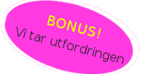

Hvorfor Top Dawgs?

Jeg har lyst på en webside som viser frem det fremste av menneskelige prestasjoner. Menneskene som motiverer meg til å våkne hver dag. Menneskene som vier livet sitt til å mestre det de holder på med. Menneskene som unngår fristelser som narkotika og sex for å dytte verden videre. Noen kaller dem superstjerner, talenter, andre kaller dem helter. Jeg kaller dem top dawgs. I løpet av et skolesemester har jeg reist verden rundt på Internett på søken etter de største av disse top dawgsene. Denne websiden er en samling av kremen.
- Stian Sandø, CEO Top Dawgs